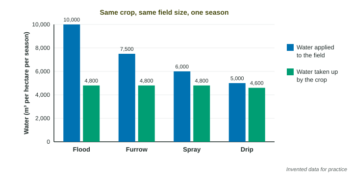

Most crops in dry regions are grown with water brought to them: from rivers through canals, or from aquifers through wells. Agriculture uses about 70% of all the fresh water people withdraw worldwide. This page compares the four irrigation methods, shows how to calculate how much water each uses, and explains the three problems irrigation causes: waterlogging, salinization and aquifer depletion.
Four ways to water a crop
- Flood irrigation covers the whole field with a sheet of water. It is cheap and simple (rice paddies are flooded on purpose), but much of the water evaporates or soaks deeper than the roots.
- Furrow irrigation sends water down shallow trenches between crop rows. It is cheap, but water evaporates from the furrows and runs off the far end of the field.
- Spray irrigation pumps water through pipes and sprays it over the crop, often from a long arm that turns around a center pivot (the green circles you see from an airplane). Less is wasted, but some spray evaporates or blows away, and pumping costs energy.
- Drip irrigation runs tubes with small holes along each row and lets water drip onto the soil at the base of each plant. Very little is lost. The tubing is expensive to buy, install and keep clean.

| Method | Water lost before it reaches the crop (rough) | Cost to install | Main drawback |
|---|---|---|---|
| Flood | varies a lot: from about a fifth to more than half | lowest | evaporation, deep seepage, waterlogging, salinization |
| Furrow | often about a third | low | evaporation and runoff from the furrows |
| Spray | about a quarter or less | high | pumping energy; spray lost to wind and evaporation |
| Drip | only about 5% | highest | cost of tubing; tubes can clog |
The exact percentages vary with soil, climate and how well a system is run. What to remember: drip is the most efficient, spray is more efficient than flood or furrow, and flood and furrow are the cheap surface methods that lose the most water. Which of those two loses more depends on the field (in the invented data above, flood does). When a question gives you numbers, use them.
Calculating water use
Efficiency is the share of the water applied that the crop actually takes up. Volume is depth times area, with both in meters.
Furrow irrigation applies 7,500 m³ of water per hectare and the crop takes up 4,800 m³. What is its efficiency?
Setup:
A farmer applies 25 mm of water to 40 hectares. How many cubic meters is that? Convert first: 25 mm = 0.025 m and 1 ha = 10,000 m².
Setup:
At 0.15 dollars per cubic meter:
Switching from flood (10,000 m³ per ha) to drip (5,000 m³ per ha):
Waterlogging and salinization
Waterlogging happens when a field gets more water than it can drain. The pore spaces in the soil fill with water, so roots cannot get oxygen, and the water table can rise toward the surface.
Salinization is the slow buildup of salt. River and well water is fresh, but it still carries a little dissolved salt. When irrigation water evaporates from the field, the water leaves and the salt stays. Season after season, salt builds up in the topsoil until crops are stunted. Large areas of once-productive land in Pakistan, Iraq, Australia and California's Central Valley have been damaged this way. Fixes include using less water (drip), draining fields so salt is flushed below the roots, and choosing salt-tolerant crops.
Aquifer depletion
Much irrigation water is pumped from aquifers. An aquifer is recharged slowly by rain and snowmelt soaking in, sometimes over thousands of years. When wells pump faster than recharge, the water table falls: aquifer depletion. Around each pumping well the water table drops in a funnel shape called a cone of depression, which can leave a neighbor's shallow well dry. The Ogallala Aquifer under the Great Plains, one of the largest in the world, has dropped by tens of meters in parts of Kansas and Texas. This is the tragedy of the commons underground.
A well's water table fell from 15 m deep in 1980 to 51 m deep in 2020. Its pump sits at 78 m. When will the water table reach the pump if the trend continues?
Rate:
Solutions work at different scales. A farm can switch to drip irrigation or grow crops that need less water. A state can pass a law limiting how much each well may pump, or charge for water by the cubic meter, so total pumping stays near the recharge rate.